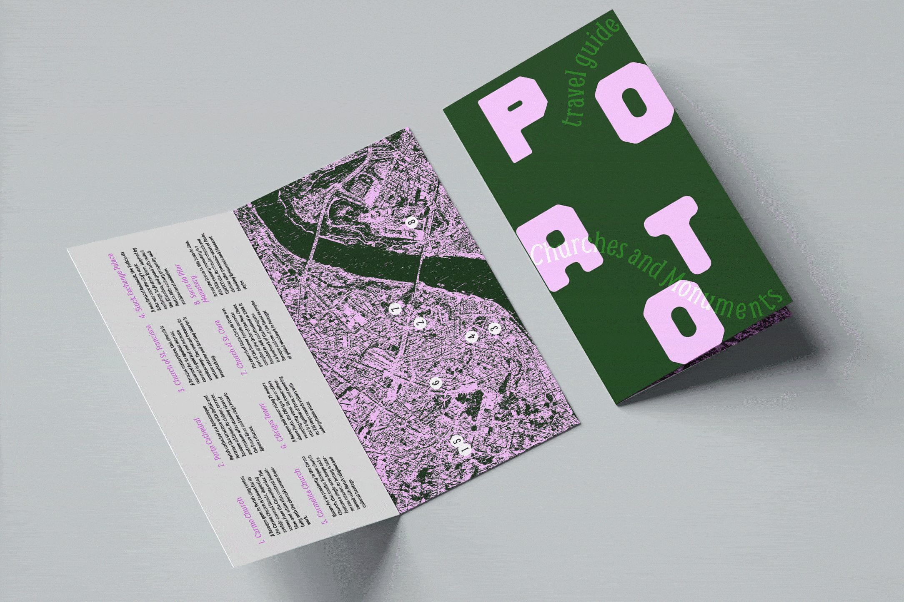
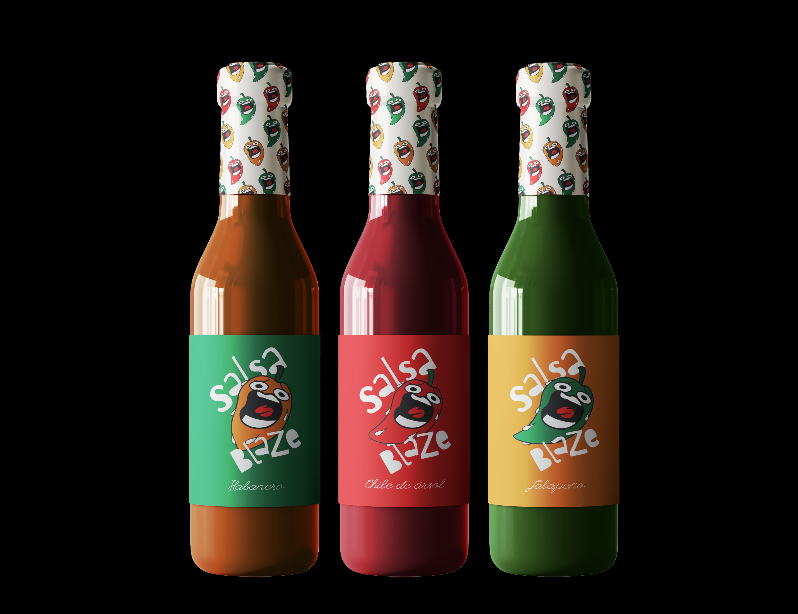
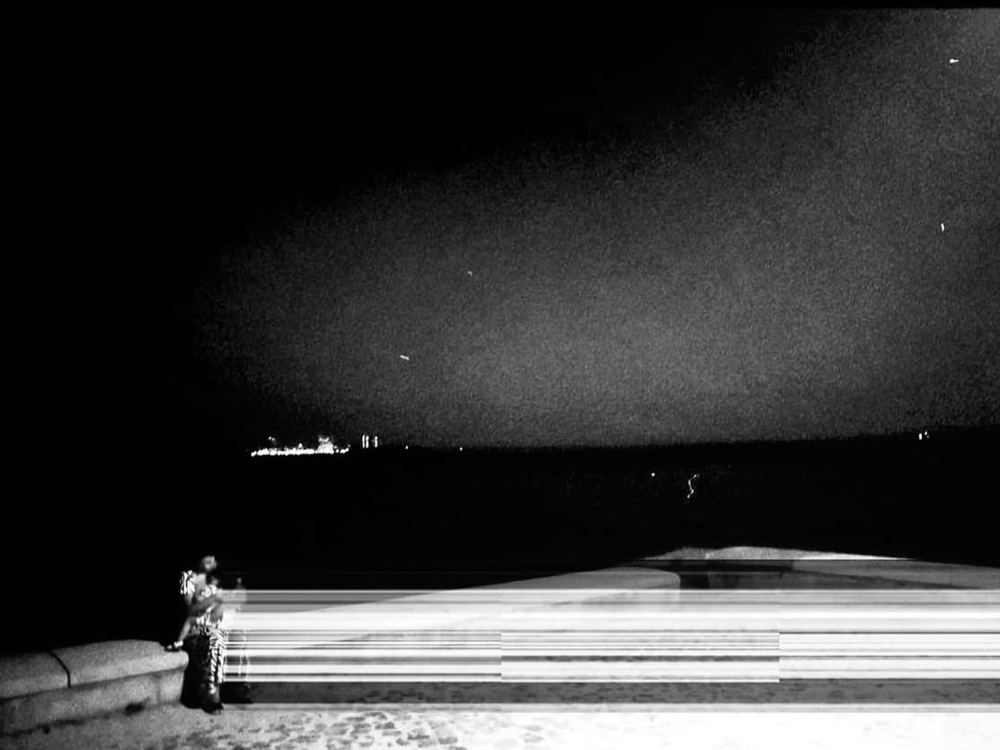
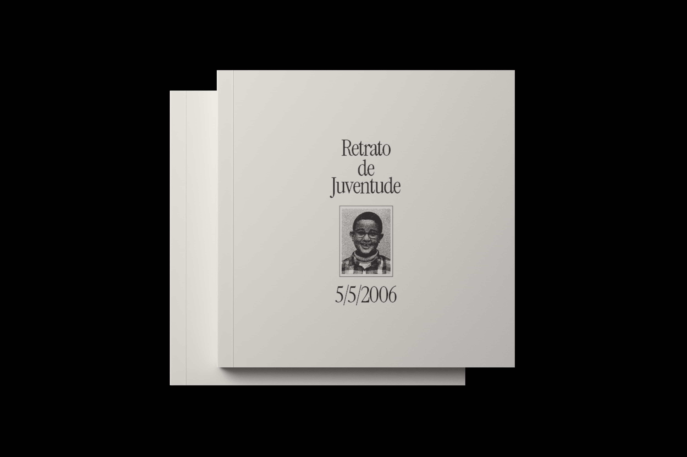
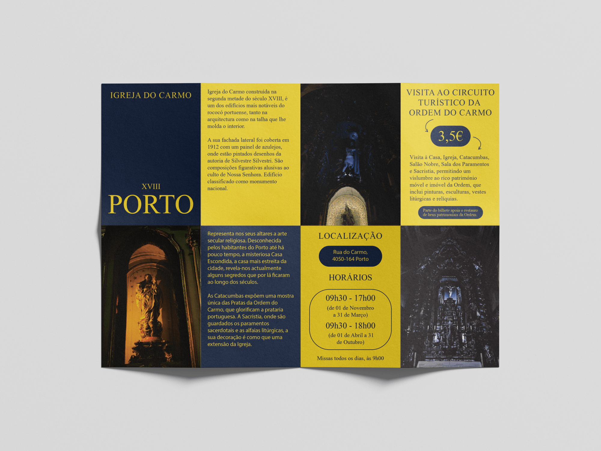
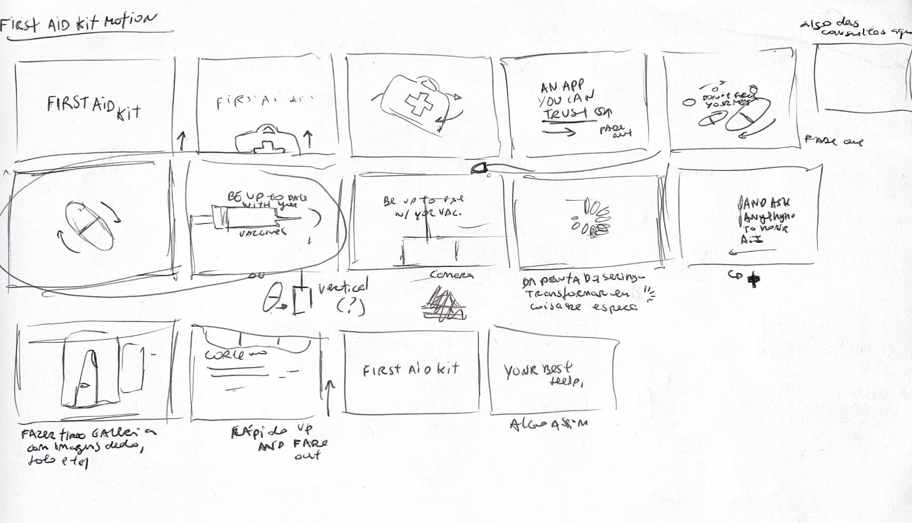

Projects
2024–2026
Here are some of my favorite projects in branding, vector work, photography, brochures, and editorials that I share on Instagram.

Travel guide
Travel guide for travelers who want to discover the biggest churches and monuments in Lisbon and Porto

Salsa Blaze
Brand identity for a Mexican sauce concept, centered around the intensity and variety of traditional peppers. Designed for a younger adult audience, the project aims to visually communicate boldness and experimentation through color and composition.

The Fresh Market
Brand identity for a local market, built around bright geometric vector elements combined with soft background tones. The visual language is playful and welcoming, aiming to attract a broad and diverse audience.

The Future Without Oil
Concept flyer based on an article by Margaret Atwood, using clean vector elements and structured typography. The design focuses on readability while maintaining a visually engaging composition.

Photography
Photos edited on photoshop mixed with different effects to give them a contemporary/futuristic feeling.

O Sonho da Floresta
Animated project reflecting on the emotional cycle of life through nature. Animals, plants, and seasonal elements act as metaphors for different stages of personal growth and emotional transformation.

Retrato de Juventude
Editorial project exploring childhood and the formation of identity. The publication combines personal memories with abstract elements to reflect on growth, nostalgia, and the less visible aspects of personal history.

Church of Our Lady of Carmo Flyer
Concept flyer inspired by the Church of Our Lady of Carmo, exploring the contrast between blue and yellow tones. The design aims for a clean and elegant aesthetic suited for visitors and cultural promotion.
UX/UI design and motion
(2026)
Projects on user experience and interface mixed with motion design.

Video for First Aid Kit
Motion design for First Aid Kit using After Effects. The goal was to create a video to show the app's features in a captivating way.